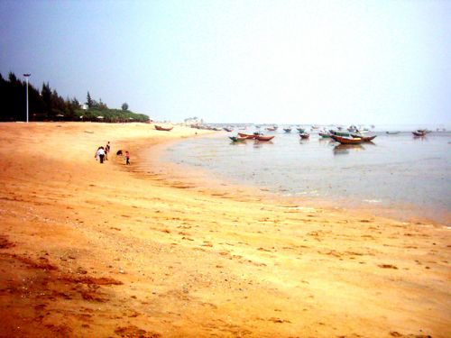
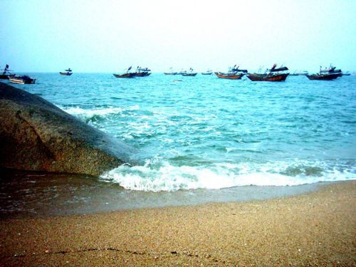

三娘湾
发布于：2017-12-30 信息来源：钦州旅游网

三娘湾，广西十佳景区之一，国家4A级景区，是中华白海豚的故乡。地处中国南方北部湾沿海，位于广西壮族自治区钦州市犀牛脚镇南面。三娘湾村东与北海隔海相望，西与钦州港毗邻防钦犀二级公路可直达三娘湾，水陆交通便捷，水产资源丰富，有青蟹、大蚝、对虾、石斑鱼等四大名产。
三娘湾地理位置十分优越，具有优越的区位优势，它拥有着丰富独特的旅游资源，三娘湾不仅以白海豚而闻名于世，而且还以神奇、壮丽的大潮而闻名。
